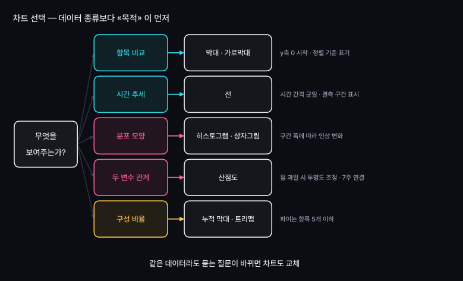
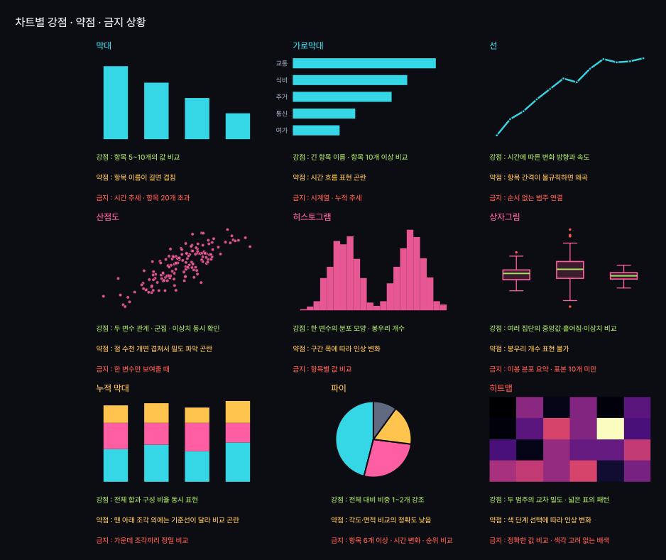
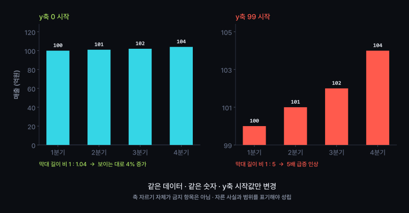
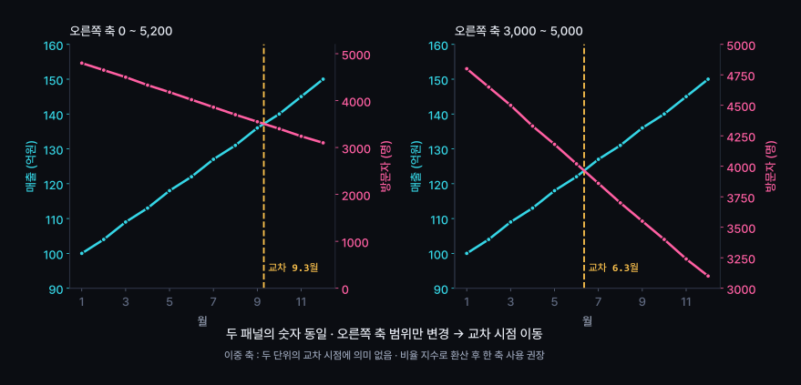
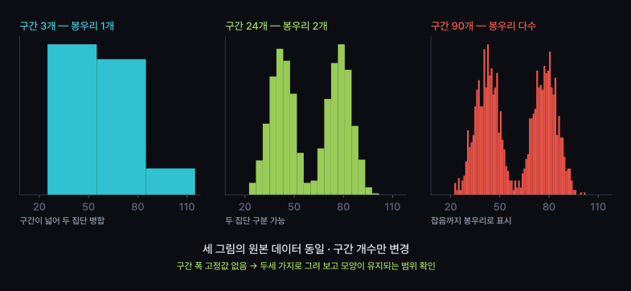
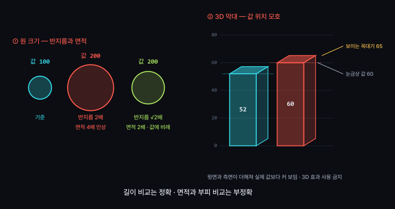
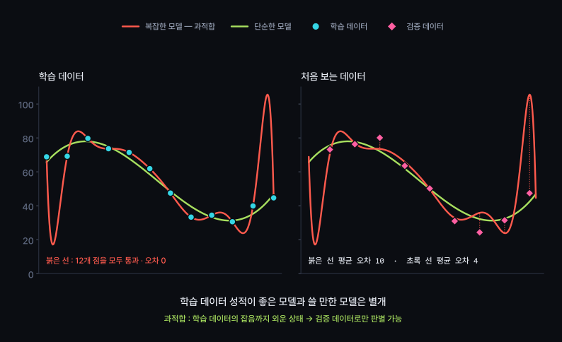

목적별 차트의 강점, 왜곡 기법, 머신러닝 맛보기
목적별로 어느 차트가 강한지 구분
차트 점검 4문으로 왜곡 여부 확인
«그려줘» 요청에 AI가 내놓는 기본값 차트
차트는 데이터 종류보다 묻는 질문에 따라 결정
같은 숫자라도 표현 방식에 따라 결론 변화


| 차트 | 강점 | 약점 | 금지 |
|---|---|---|---|
| 막대 | 항목 5~10개의 값 비교 · 길이 비교의 정확도 높음 | 항목 이름이 길면 겹침 | y축 0 외 시작 · 항목 20개 초과 |
| 가로막대 | 긴 항목 이름 · 항목 10개 이상 순위 비교 | 시간 흐름 표현 곤란 | 시계열 표현 |
| 선 | 시간에 따른 변화 방향과 속도 | 시간 간격이 불규칙하면 기울기 왜곡 | 순서 없는 범주 연결 |
정렬 기준 표기 필수
값 순 정렬 → 순위 파악에 유리 · 시간 순서 소멸
시간 순 정렬 → 추세 파악에 유리 · 순위 파악에 불리
| 차트 | 강점 | 약점 | 금지 |
|---|---|---|---|
| 히스토그램 | 한 변수의 분포 모양 · 봉우리 개수 | 구간 폭에 따라 인상 변화 | 항목별 값 비교 |
| 상자그림 | 여러 집단의 중앙값·흩어짐·이상치 동시 비교 | 봉우리 개수 표현 불가 | 이봉 분포 요약 · 표본 10개 미만 |
| 산점도 | 두 변수 관계 · 군집 · 이상치 동시 확인 | 점 수천 개면 겹쳐서 밀도 파악 곤란 | 한 변수만 보여줄 때 |
| 누적 막대 | 전체 합과 구성 동시 표현 | 맨 아래 조각 외에는 기준선이 달라 비교 곤란 | 가운데 조각끼리 정밀 비교 |
| 파이 | 전체 대비 비중 1~2개 강조 | 각도·면적 비교의 정확도 낮음 | 항목 6개 이상 · 순위 비교 |
| 히트맵 | 두 범주의 교차 밀도 · 넓은 표의 패턴 | 색 단계 선택에 따라 인상 변화 | 정확한 값 비교 |
작은 조각끼리 순위 구분 불가
→ 가로막대로 교체
순서 없는 범주 사이에 추세 암시
→ 막대로 교체
두 집단이 중앙값 하나에 묻힘
→ 히스토그램 병행
값 위치 모호 · 앞뒤 조각 크기 왜곡
→ 평면 차트 유지




강조색 1개 · 나머지는 회색 계열
순서 없는 범주에 연속 컬러맵 사용 금지
색만으로 구분하는 표현 지양 → 모양·위치 병행
빨강·초록 조합 주의 (색각 이상 비율 남성 약 8%)
제목 — 그래프가 답하는 질문
축 이름과 단위
n (사용한 행 수)
출처와 기준일
축을 자른 경우 그 사실 표기
필수 요소 누락 차트 = 검증 불가 자료
발표 자료와 보고서 모두 같은 기준 적용
왜곡 판정 기준 : 같은 데이터에서 결론 문장이 바뀌는가
y축이 0에서 시작하는가
다르면 그 사실이 표기됐는가
축 이름과 단위가 있는가
비율과 절대값 중 무엇인가
값 순인가 시간 순인가
기준 변경 시 순위 인상 변화
몇 개의 값으로 그린 그림인가
결측 제외 행 수 표기 여부
남의 차트를 읽을 때와 내 차트를 올리기 전 동일하게 적용
같은 데이터 · 같은 값
표현만 바꿨는데 결론 문장이 달라지면 왜곡
| 기법 | 정직한 차트의 결론 | 왜곡 차트의 결론 |
|---|---|---|
| 축 자르기 | 4분기 매출 4% 증가 | 4분기 매출 급증 |
| 이중 축 | 매출 상승 · 방문자 감소 | 9월에 매출이 방문자를 추월 |
| 구간 폭 | 통학 시간 두 집단으로 분리 | 통학 시간 대체로 비슷 |
| 면적 조정 | 값 2배 | 압도적 격차 |
축을 자른 사실과 범위
제외한 행 수와 기준
구간 폭 선택 근거
같은 기간 · 같은 단위 · 같은 집단
기준이 다르면 그림 분리
강조 자체는 허용 · 근거 없는 인상 조작이 문제
판단 기준 : 같은 그림을 상대편이 봐도 같은 결론에 도달하는가
13~15주 팀 프로젝트에서 선택 사용
오늘은 용어와 한계까지만
사람이 규칙 작성
제목에 «무료» 포함 → 스팸
입력 : 규칙 + 데이터
출력 : 판정 결과
컴퓨터가 데이터에서 규칙 추정
스팸 1만 건 + 정상 1만 건 → 판정 기준 생성
입력 : 데이터 + 정답
출력 : 규칙
규칙을 사람이 말로 적기 어려운 문제에 유리
대신 왜 그렇게 판정했는지 설명이 어려워짐
| 종류 | 예측 대상 | 예 | 관련 수업 |
|---|---|---|---|
| 회귀 | 숫자 | 다음 달 전기요금 · 중고차 가격 · 통학 시간 | 7주 상관 |
| 분류 | 범주 | 스팸 여부 · 수강 포기 여부 · 불량 여부 | 11주 판정 기준 |
공통 조건 : 정답이 붙은 과거 데이터 필요
정답 수집이 가장 비싼 단계 · 정답 품질이 성능 상한 결정
비슷한 행끼리 묶기
예 : 고객 유형 3~4개 · 학습 패턴 분류
4주차 이봉 분포에서 두 집단 분리와 같은 작업
묶음의 이름은 사람이 부여
«2번 군집» 의 의미 해석은 분석자의 몫
군집 개수를 바꾸면 결과도 변화
단위가 다른 열을 함께 쓰면 큰 숫자 열이 지배
→ 5주차 표준화 선행 필요
비지도학습 결과에는 정답이 없음 → 해석과 검증이 전적으로 분석자 책임
검증용 데이터로 학습하면 성능 수치의 의미 소멸
시험 범위를 미리 외운 상태의 점수와 동일
시계열 데이터 : 시간 순서대로 분리
미래 데이터로 학습한 뒤 과거를 맞히는 구성은 평가 불가

| 주차 | 그때의 결정 | 모델에 남는 결과 |
|---|---|---|
| 2주 | 표본 수집 설계 | 치우친 표본 → 치우친 예측 |
| 3주 | 결측 처리 방식 | 평균 대치 → 흩어짐 축소 · 과신 |
| 5주 | 이상치 제거 기준 | 임의 제거 → 극단 상황 예측 실패 |
모델 교체보다 데이터 품질 개선의 효과가 큰 구간 존재
2~5주 내용이 머신러닝의 전제 조건
검사 대상 1,000명 중 환자 50명 (5%)
모델이 전원을 «정상» 으로 판정
→ 정확도 95%
환자 50명을 전부 놓친 모델의 성적표
재현율 — 실제 환자 중 찾아낸 비율
정밀도 — 환자라고 한 것 중 실제 비율
둘은 대개 한쪽을 올리면 다른 쪽이 하락
불균형 데이터에서 정확도 단독 보고 금지
설명 > 예측
상관(7주)·인과(9주) 확인이 먼저
13~15주 팀 프로젝트
필요한 팀만 선택 사용
학습·검증 분리 방식
사용 지표 · 데이터 한계
예측 수치보다 «왜 그런 결과인가» 설명이 평가 대상
모델 없이 기술통계와 시각화만으로 끝나는 분석도 완결 가능
같은 데이터로 정직한 차트와 왜곡 차트 제작
[목표]
같은 데이터로 정직한 차트 1장, 왜곡 차트 1장을 만든다.
[제약]
- 두 차트의 원본 데이터 동일. 값 수정, 행 삭제 금지
- 왜곡 차트에 사용한 기법을 파일 이름에 표기
- 차트 종류는 목적에 맞게 선택하고 그 이유를 한 줄로 적을 것
[검증 조건]
- 정직한 차트 : y축 0 시작, 축 이름과 단위, n, 출처, 정렬 기준 표기
- 왜곡 차트 : 사용한 기법과 그로 인한 인상 차이를 한 줄로 기록
- 두 차트에서 각각 나오는 결론 문장을 나란히 적을 것
- 두 결론이 같으면 왜곡 차트 재작업
[비목표]
- 데이터 수정, 추가 수집, 예측 모델
핵심 : [검증 조건] 셋째 줄
결론 문장 비교가 왜곡 판정의 기준
| # | 실습 | 확인할 개념 |
|---|---|---|
| 1 | "이 데이터 그려줘" 한 줄만 입력 → 결과 저장 | AI 함정 #5 |
| 2 | 점검 4문 적용 → 누락 항목 목록화 | 차트 요건 |
| 3 | 위 명세로 정직한 차트 제작 | 기준 준수 |
| 4 | 왜곡 차트 제작 · 사용 기법 명시 | 왜곡 원리 |
| 5 | 짝과 교환 → 상대 차트의 왜곡 기법 3개 찾기 (확장) | 판별력 |
공식 과제 : 정직한 차트와 왜곡된 차트 · 3번과 4번 결과 활용
| 개념 | 핵심 |
|---|---|
| 차트 선택 | 데이터 종류보다 질문이 먼저 · 비교/추세/분포/관계/구성 |
| 막대 · 선 | 막대 = 항목 값 비교 · 선 = 시간 추세 · 범주 연결 금지 |
| 히스토그램 · 상자그림 | 분포 모양 확인 · 상자그림은 봉우리 개수 표현 불가 |
| 산점도 | 두 변수 관계·군집·이상치 동시 확인 · 7주 상관과 한 쌍 |
| 파이 · 누적막대 | 구성 비율용 · 파이는 항목 5개 이하 · 순위 비교 금지 |
| 축 자르기 | 4% 증가 → 5배 급증 인상 · 자른 사실 표기 의무 |
| 이중 축 · 면적 | 교차 시점은 축 범위의 산물 · 반지름 2배 = 면적 4배 |
| 구간 폭 | 같은 데이터에서 봉우리 1개 ↔ 2개 ↔ 다수 |
| 점검 4문 | 축 시작값 · 단위 · 정렬 기준 · n |
| AI 함정 #5 | «그려줘» → 기본값 차트 · 축·정렬·단위·n을 명세에 포함 |
| 머신러닝 | 데이터에서 규칙 추정 · 지도(회귀·분류)와 비지도(군집) |
| 과적합 · 정확도 | 검증 데이터 분리 필수 · 불균형 데이터에서 정확도 단독 보고 금지 |
두 변수가 함께 움직이는 정도를 숫자 하나로
오늘 배운 산점도와 한 쌍으로 사용